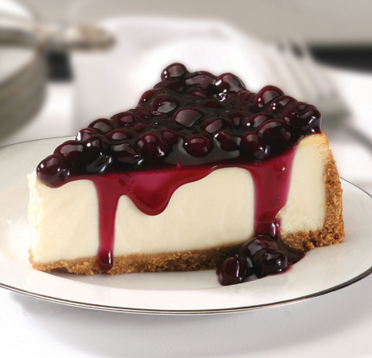
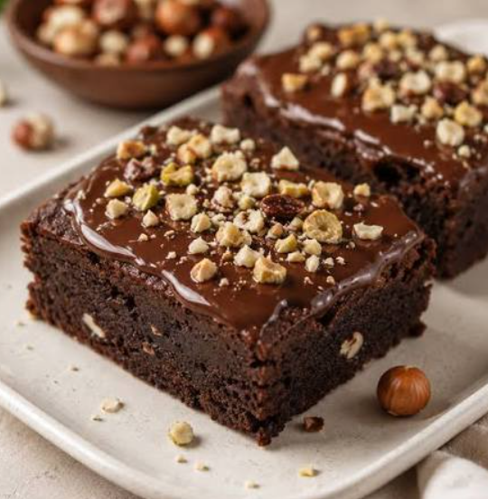
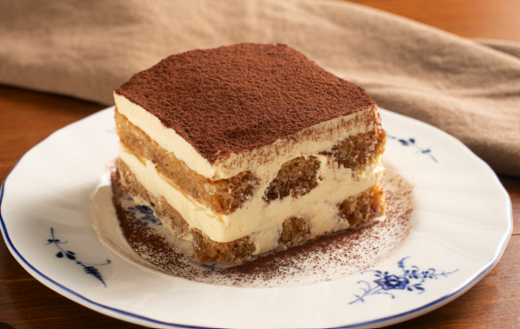
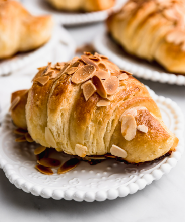
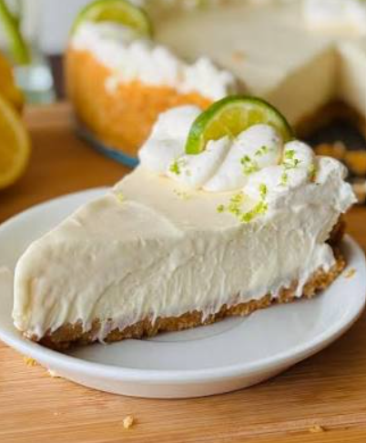
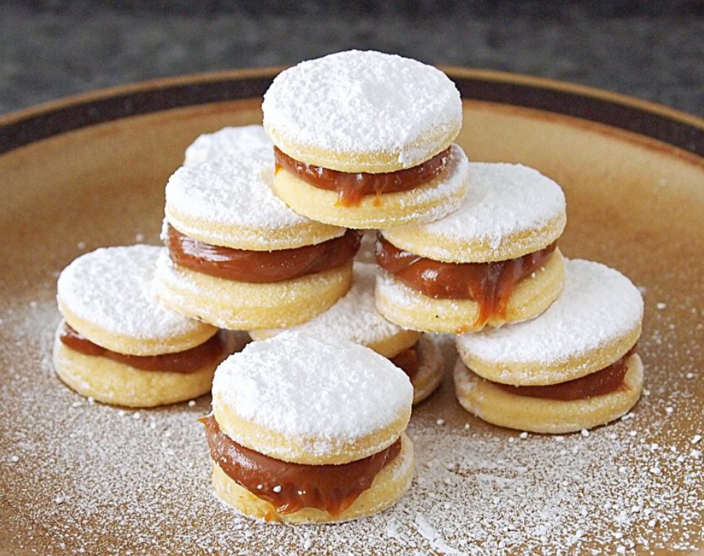
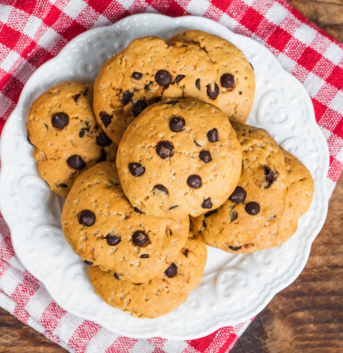
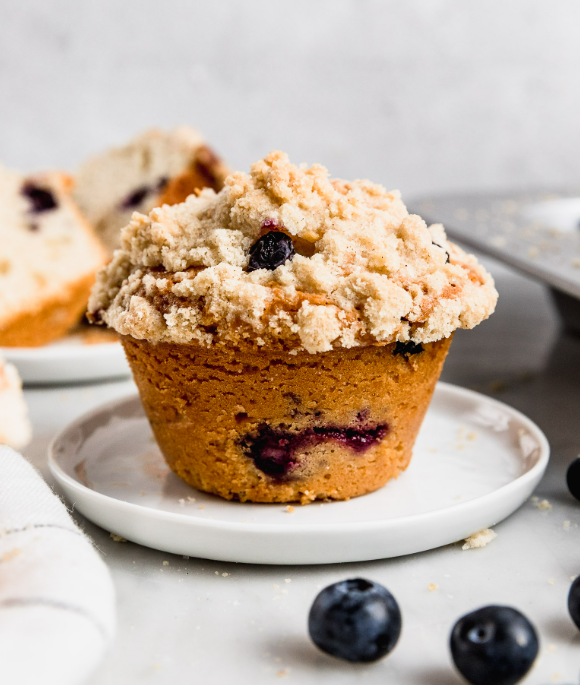

El Toque Dulce de tu DíaLa pareja ideal para tu bebida favorita. Disfruta de nuestra exquisita selección de repostería artesanal, horneada cuidadosamente con ingredientes de primera calidad. Texturas suaves, sabores profundos y el toque exacto de dulzura para hacer tu momento inolvidable. |

|
|
 Cheesecake de Frutos RojosClásica y muy cremosa, con una base crujiente de galleta artesanal y cubierta con un dulce coulis de fresas y arándanos. |
 Brownie IntensoUn bizcocho melcochudo y profundo, elaborado con cacao premium y trozos de nueces tostadas. El acompañante perfecto para un café. |
 Tiramisú ClásicoLa receta tradicional italiana con capas de bizcocho bañadas en nuestro propio café espresso, crema de mascarpone y un toque de cacao puro. |
 Croissant de AlmendrasHorneado cada mañana, dorado y crujiente por fuera, relleno con una suave y dulce crema de almendras que se deshace en la boca. |
|
 Pie de LimónBase crujiente de galleta con un relleno suave y perfectamente cítrico, coronada con un abundante merengue ligeramente tostado. |
 Alfajores ClásicosSuaves tapas artesanales que se deshacen en la boca, unidas por un dulce y abundante relleno de manjar blanco con un toque de coco. |
 Galleta ChocochipGalleta artesanal grande, horneada para lograr un exterior crujiente y un centro suave y tibio lleno de chocolate derretido. |
 Muffin de ArándanosEsponjoso y recién horneado, repleto de jugosos arándanos naturales y coronado con una costra dulce y crujiente. |